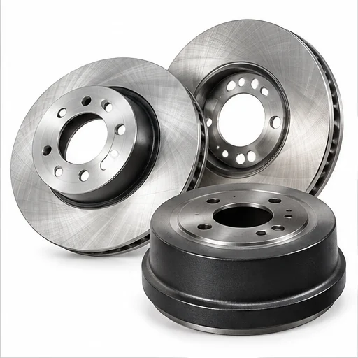
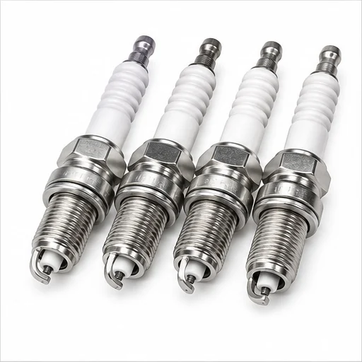

01. Kit de filtres (air / huile / habitacle)
Catégorie courante d’entretien pouvant être regroupée dans une même commande. L’intervalle de remplacement doit être vérifié selon le plan d’entretien et l’usage du véhicule.
Demander un devis de piècesCette section s’adresse aux distributeurs de pièces, réseaux de réparation et importateurs. Indiquez le numéro OE, la référence de pièce, le VIN ou le véhicule exact ; nous vérifierons la compatibilité, l’état, le niveau de qualité, l’emballage et la destination avant devis.
Des consommables d’entretien aux composants de châssis, de freinage et de carrosserie, l’approvisionnement peut être organisé selon le véhicule, la référence OE, la quantité et la destination.
Catégorie courante d’entretien pouvant être regroupée dans une même commande. L’intervalle de remplacement doit être vérifié selon le plan d’entretien et l’usage du véhicule.
Demander un devis de pièces

Pièces d’usure du système de freinage. Vérification des spécifications et références OE pour Prado, Hilux, Corolla et autres modèles ciblés.
Photos : plaquettes et mâchoires de freinDemander un devis de pièces
Consommables légers adaptés aux commandes groupées. Vérifier la longueur, le raccord et la compatibilité du véhicule.
Demander un devis de pièces

Éléments courants d’éclairage et de signalisation. Vérifier le culot, la puissance et les exigences électriques du véhicule.
Photos : ampoule de phare et ampoule de signalisationDemander un devis de pièces
Peuvent être commandés avec les plaquettes. Vérifier le véhicule, l’essieu, le diamètre du disque et la version du système de freinage.
Demander un devis de pièces
Amortisseurs, biellettes de barre stabilisatrice, silentblocs et bras inférieurs. Compatibilité selon le code châssis, la charge par essieu et la référence OE.
Demander un devis de pièces
Pare-chocs, calandres, blocs optiques et rétroviseurs. Vérifier l’année, le restylage, le côté et les ouvertures des capteurs.
Demander un devis de pièces
Pour véhicules utilitaires et tout-terrain. Confirmer les caractéristiques, la capacité de charge et l’application exacte.
Demander un devis de pièces
Pièces compactes pouvant être associées aux kits de filtres. Vérifier le code moteur, le filetage et l’indice thermique.
Demander un devis de piècesLes images sont fournies à titre indicatif. La marque, la référence, le niveau de qualité, la compatibilité et la disponibilité sont confirmés dans le devis.
Une commande de gros fiable commence par l’identification exacte de l’application. Envoyez les références OE, numéros de pièces du fournisseur, VIN, code moteur, année du véhicule et, le cas échéant, des photos des étiquettes ou connecteurs.
Précisez si les pièces doivent être neuves, d’occasion ou reconditionnées, la marque ou le niveau de qualité souhaité, les attentes de garantie, l’emballage, la quantité par référence et la destination. Nous confirmerons les caractéristiques pouvant être documentées avant le devis.
Les pièces ayant des dimensions, poids et exigences d’emballage différents peuvent nécessiter des cartons ou plans de palettes distincts. Confirmez les marquages des cartons, le poids brut, le volume, la méthode de chargement et les conditions d’expédition dans les documents finaux.
Pour l’approvisionnement en véhicules, les guides par modèle et les informations sur le Kazakhstan, consultez notre section consacrée à l’exportation de véhicules.Consulter l’exportation de véhicules →
Indiquez la référence OE ou le numéro de pièce, l’application véhicule, l’état souhaité, la quantité et la destination.